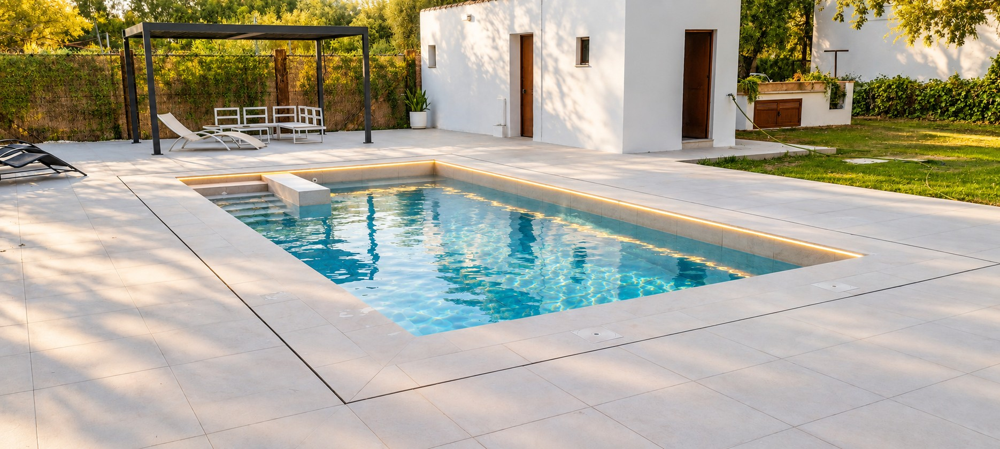

Dar forma a tu espacio.
Cuéntanos la obra que tienes en mente. Revisamos las necesidades del proyecto y el trabajo a realizar para preparar una propuesta.
Consultar una construcciónARCOS DE LA FRONTERA · CÁDIZ
Servicios auxiliares de la construcción. Distintos oficios, un mismo compromiso con tu obra.
Cuéntanos tu proyectoOCM Construcciones, ahora también en la web.
OCM SERVICIOS
Una reforma, una nueva construcción o un trabajo concreto. El primer paso es entender qué necesitas.
Trabajamos desde Arcos de la Frontera para proyectos en la provincia de Cádiz. Estudiamos el espacio, definimos el alcance y preparamos un presupuesto para tu obra.
QUÉ PODEMOS HACER POR TI
Cuéntanos la obra que tienes en mente. Revisamos las necesidades del proyecto y el trabajo a realizar para preparar una propuesta.
Consultar una construcciónRenovar, adaptar o aprovechar mejor un espacio. Valoramos su estado y concretamos contigo las actuaciones y los acabados.
Consultar una reformaApoyo a la construcción para actuaciones y oficios concretos. Explícanos qué necesita tu obra, dónde y en qué plazo para valorar el trabajo.
Consultar un servicioCONSTRUCCIÓN Y EXTERIORES
Una selección de nuestra galería. Pulsa una fotografía para verla con más detalle.
LA IDENTIDAD DE SIEMPRE
OCM es el nombre con el que presentamos nuestro trabajo. OCM Servicios reúne en esta web nuestros servicios auxiliares de la construcción, obras y reformas.
Detrás de cada consulta hay una conversación directa: qué quieres hacer, dónde y qué necesitas resolver. Con esa información empezamos a preparar tu proyecto.
Hablemos de tu obra
TAMBIÉN HACEMOS PISCINAS
La construcción y reforma de piscinas tiene su propia web: OCM POOL. Descubre los acabados, equipamiento y galería de trabajos.
Descubre OCM POOLANTES DE EMPEZAR
Envíanos la localidad, el tipo de trabajo y unas fotos del espacio.
Revisamos la información y acordamos qué actuaciones hay que valorar.
Detallamos el trabajo presupuestado para que puedas decidir.
DUDAS HABITUALES
Partimos de Arcos de la Frontera y atendemos consultas para trabajos en la provincia de Cádiz. Dinos la ubicación para valorar tu proyecto.
La localidad, una explicación del trabajo, fotografías y medidas aproximadas si las tienes. A partir de ahí concretaremos la información necesaria.
Sí. Puedes conocer nuestra actividad de piscinas en OCM POOL · mrpool.es.
Cuéntanos lo que necesitas. Valoramos cada consulta según el alcance y la disponibilidad.
DE ARCOS, A LA PROVINCIA DE CÁDIZ
Envíanos la ubicación, unas fotografías y una explicación del trabajo.